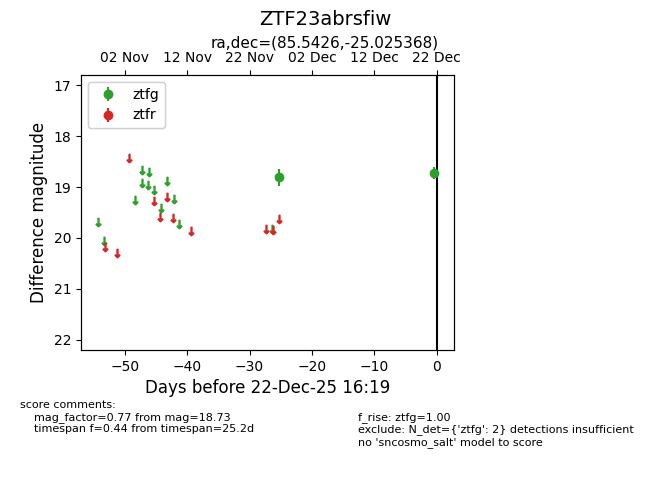
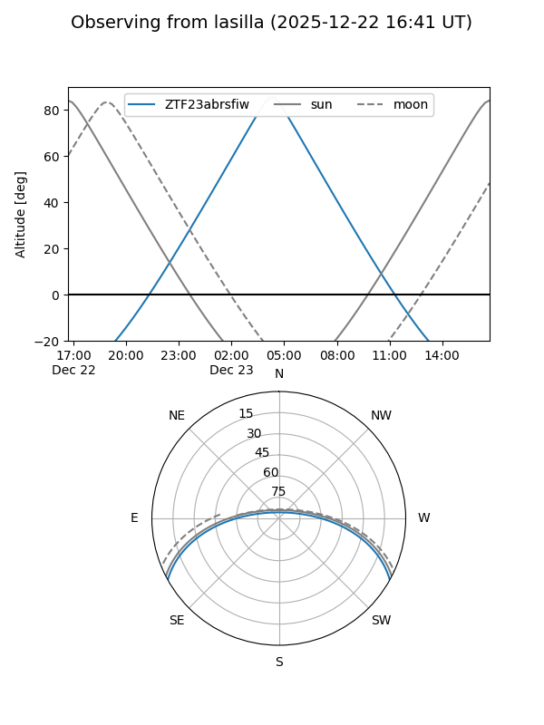
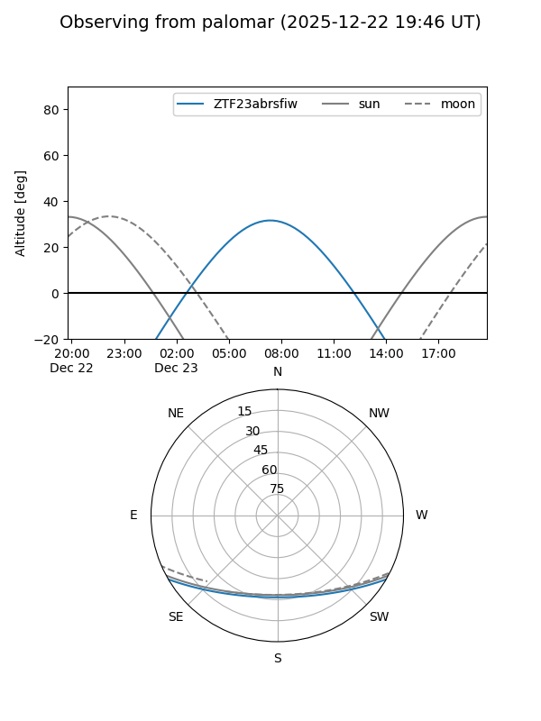

ZTF23abrsfiw
Target ZTF23abrsfiw at 2025-12-24 16:25
Aliases and brokers:
FINK: fink-portal.org/ZTF23abrsfiw
Lasair: lasair-ztf.lsst.ac.uk/objects/ZTF23abrsfiw
ALeRCE: alerce.online/object/ZTF23abrsfiw
alt names
ZTF23abrsfiw (ztf,fink_ztf)
Coordinates:
equatorial (ra, dec) = 85.5426,-25.02537
equatorial (HMS+DMS) = 05:42:10.23,-25:01:31.33
galactic (l, b) = (229.2649,-25.65366)
Flags:
Photometry:
last ztfg=18.73
2 ztfg detections
Lightcurve

Visibility


Additional plots